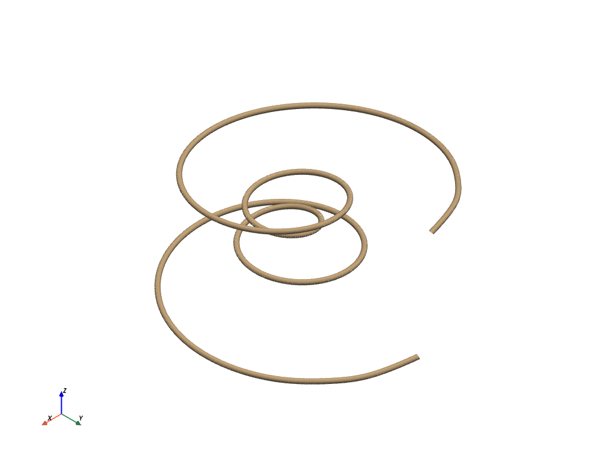

Spline¶
- Spline(points, n_points=None)¶
点からスプラインを作成します．
- パラメータ
- points
np.ndarray スプラインを作成するポイントの配列です．配列は3 Dで方向が順序付けられている必要があります．
- n_points
int,optional 点配列に沿って補間する点の数．
- points
- 戻り値
pyvista.PolyDataLine mesh of spline.
例
Construct a spline.
>>> import numpy as np >>> import pyvista as pv >>> theta = np.linspace(-4 * np.pi, 4 * np.pi, 100) >>> z = np.linspace(-2, 2, 100) >>> r = z**2 + 1 >>> x = r * np.sin(theta) >>> y = r * np.cos(theta) >>> points = np.column_stack((x, y, z)) >>> spline = pv.Spline(points, 1000) >>> spline.plot(render_lines_as_tubes=True, line_width=10, show_scalar_bar=False)
